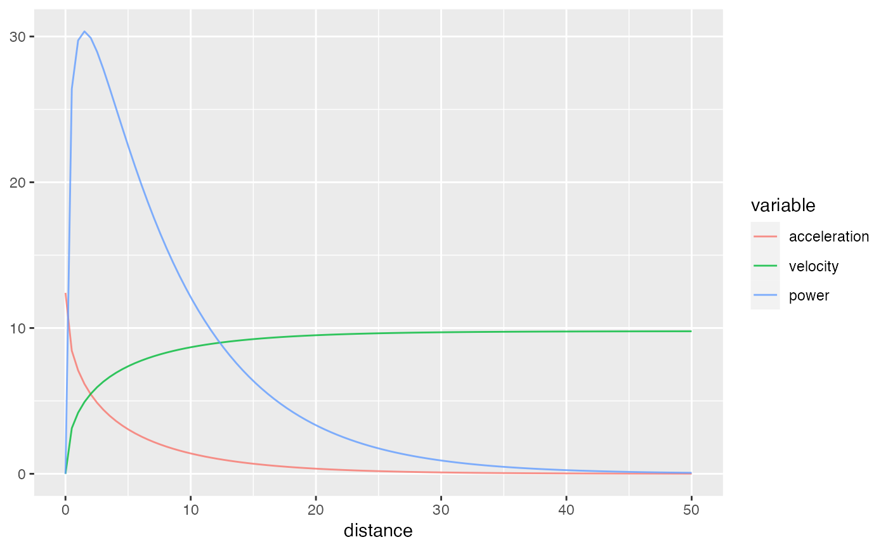
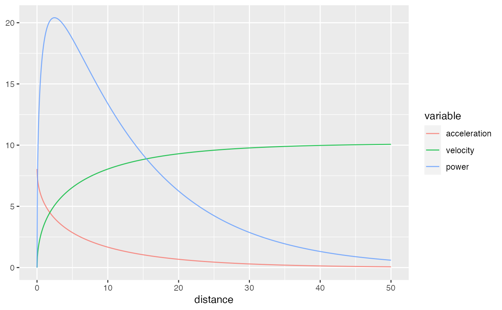
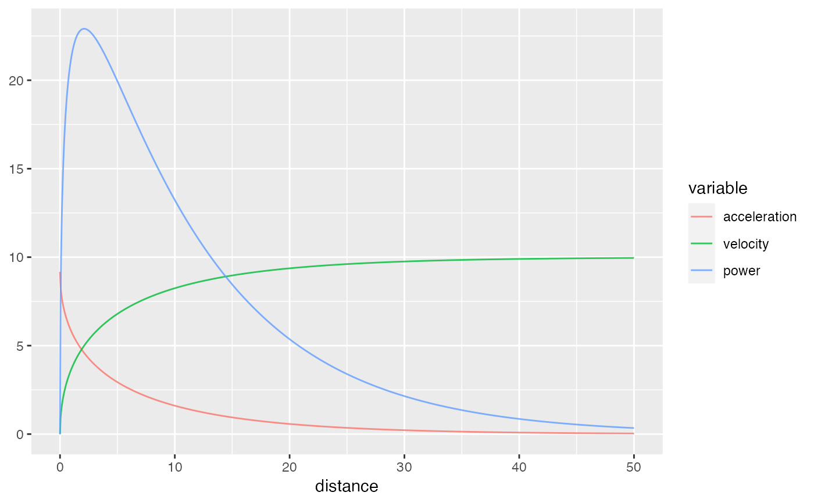
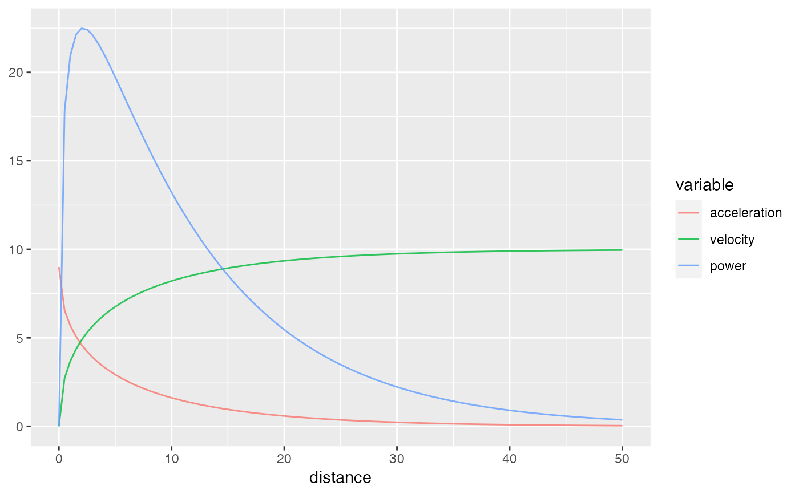
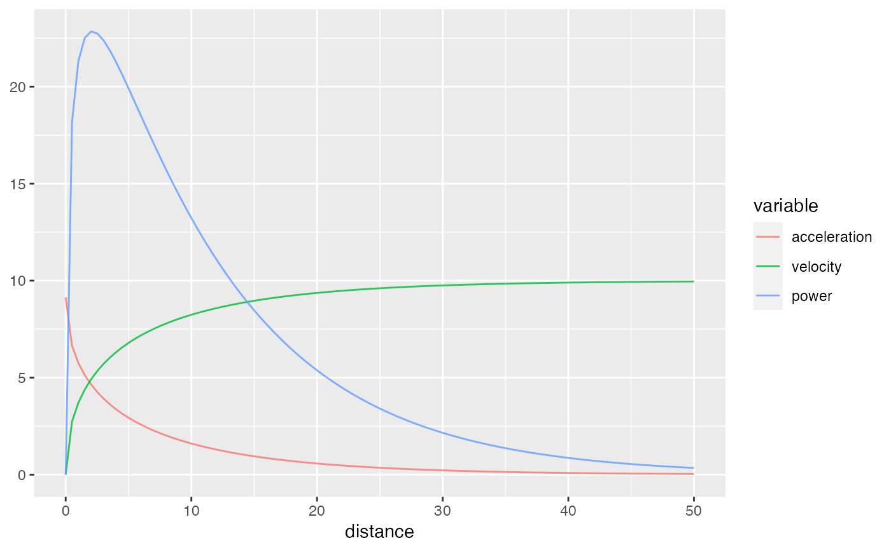

These functions model the sprint split times using mono-exponential equation, where time
is used as target or outcome variable, and distance as predictor.
model_timing_gates Provides the simplest model with estimated MSS
and MAC parameters
model_timing_gates_TC Besides estimating MSS and MAC
parameters, this function estimates additional parameter TC or time correction
model_timing_gates_FD In addition to estimating MSS and
MAC parameters, this function estimates FD or flying distance
model_timing_gates_FD_TC Combines the approach of the model_timing_gates_FD with
that one of model_timing_gates_TC. In other words, it add extra parameter TC to be estimated in
the model_timing_gates_FD model
model_timing_gates(
distance,
time,
weights = 1,
LOOCV = FALSE,
control = minpack.lm::nls.lm.control(maxiter = 1000),
na.rm = FALSE,
...
)
model_timing_gates_TC(
distance,
time,
weights = 1,
LOOCV = FALSE,
control = minpack.lm::nls.lm.control(maxiter = 1000),
na.rm = FALSE,
...
)
model_timing_gates_FD(
distance,
time,
weights = 1,
FD = NULL,
LOOCV = FALSE,
control = minpack.lm::nls.lm.control(maxiter = 1000),
na.rm = FALSE,
...
)
model_timing_gates_FD_TC(
distance,
time,
weights = 1,
FD = NULL,
LOOCV = FALSE,
control = minpack.lm::nls.lm.control(maxiter = 1000),
na.rm = FALSE,
...
)Numeric vector. Indicates the position of the timing gates and time measured
Numeric vector. Default is vector of 1.
This is used to give more weight to particular observations. For example, use 1\distance to give
more weight to observations from shorter distances.
Should Leave-one-out cross-validation be used to estimate model fit? Default is FALSE
Control object forwarded to nlsLM. Default is minpack.lm::nls.lm.control(maxiter = 1000)
Logical. Default is FALSE
Extra parameters forwarded to nlsLM function
Use this parameter if you do not want the FD parameter to be estimated, but rather take the
provided value
List object with the following elements:
Data frame used to estimate the sprint parameters, consisting of distance,
time, weights, and pred_time columns
Model returned by the nlsLM function
List with the estimated parameters, of which the following
are always returned: MSS, TAU, MAC, and PMAX
List with the following components:
RSE, R_squared, minErr, maxErr, and RMSE
Haugen TA, Tønnessen E, Seiler SK. 2012. The Difference Is in the Start: Impact of Timing and Start Procedure on Sprint Running Performance: Journal of Strength and Conditioning Research 26:473–479. DOI: 10.1519/JSC.0b013e318226030b.
Jovanović, M., Vescovi, J.D. (2020). shorts: An R Package for Modeling Short Sprints. Preprint available at SportRxiv. https://doi.org/10.31236/osf.io/4jw62
split_distances <- c(10, 20, 30, 40, 50)
split_times <- create_timing_gates_splits(
gates = split_distances,
MSS = 10,
MAC = 9,
FD = 0.25,
TC = 0
)
# Simple model
simple_model <- model_timing_gates(split_distances, split_times)
print(simple_model)
#> Estimated model parameters
#> --------------------------
#> MSS TAU MAC PMAX
#> 9.7809914 0.7879759 12.4128052 30.3523852
#>
#> Model fit estimators
#> --------------------
#> RSE R_squared minErr maxErr maxAbsErr RMSE
#> 0.01881059 0.99990584 -0.02334638 0.01504645 0.02334638 0.01457062
#> MAE MAPE
#> 0.01325575 0.49110649
coef(simple_model)
#> MSS TAU MAC PMAX
#> 9.7809914 0.7879759 12.4128052 30.3523852
plot(simple_model)

# Model with correction of 0.3s
model_with_correction <- model_timing_gates(split_distances, split_times + 0.3)
print(model_with_correction)
#> Estimated model parameters
#> --------------------------
#> MSS TAU MAC PMAX
#> 10.140559 1.259660 8.050235 20.408469
#>
#> Model fit estimators
#> --------------------
#> RSE R_squared minErr maxErr maxAbsErr RMSE
#> 0.010160610 0.999973248 -0.007938397 0.013071935 0.013071935 0.007870375
#> MAE MAPE
#> 0.007096904 0.234356971
plot(model_with_correction)

# Model with time_correction estimation
model_with_TC <- model_timing_gates_TC(split_distances, split_times)
print(model_with_TC)
#> Estimated model parameters
#> --------------------------
#> MSS TAU MAC PMAX TC
#> 9.9937829 1.0898776 9.1696379 22.9098425 0.2014794
#>
#> Model fit estimators
#> --------------------
#> RSE R_squared minErr maxErr maxAbsErr
#> 0.0002214763 0.9999999910 -0.0002176842 0.0001432646 0.0002176842
#> RMSE MAE MAPE
#> 0.0001400739 0.0001310987 0.0039156127
plot(model_with_TC)

# Model with flying distance estimations
model_with_FD <- model_timing_gates_FD(split_distances, split_times)
print(model_with_FD)
#> Estimated model parameters
#> --------------------------
#> MSS TAU MAC PMAX FD
#> 10.000000 1.111111 9.000000 22.500000 0.250000
#>
#> Model fit estimators
#> --------------------
#> RSE R_squared minErr maxErr maxAbsErr
#> 1.174950e-15 1.000000e+00 -1.332268e-15 0.000000e+00 1.332268e-15
#> RMSE MAE MAPE
#> 7.431034e-16 5.329071e-16 2.050244e-14
plot(model_with_FD)

# Model with flying distance estimations and time correction
model_with_FD_TC <- model_timing_gates_FD_TC(split_distances, split_times)
print(model_with_FD_TC)
#> Estimated model parameters
#> --------------------------
#> MSS TAU MAC PMAX FD TC
#> 9.99465517 1.09286152 9.14539944 22.85127844 0.03518113 0.11860204
#>
#> Model fit estimators
#> --------------------
#> RSE R_squared minErr maxErr maxAbsErr
#> 0.0002690302 0.9999999934 -0.0001926737 0.0001170644 0.0001926737
#> RMSE MAE MAPE
#> 0.0001203140 0.0001112901 0.0032975680
plot(model_with_FD_TC)
